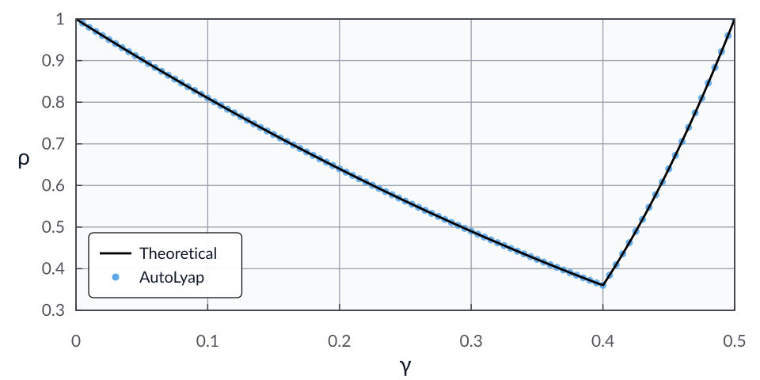

The proximal gradient method
This example shows how to define a custom
Algorithm for proximal gradient and
then analyze its convergence with AutoLyap.
We consider the composite minimization problem
where \(f\) is \(L\)-smooth and \(\mu\)-strongly convex with \(0<\mu<L\), and \(g\) is proper, lower semicontinuous, and convex.
For an initial point \(x^0 \in \calH\) and step size \(\gamma \in \reals_{++}\) with \(0 < \gamma \le 2/L\), the proximal gradient method is given by
The analysis goal is to search for the smallest contraction factor provable via AutoLyap:
where
Step 1: Problem class
Let \((\calH,\langle\cdot,\cdot\rangle)\) be a real Hilbert space with canonical norm \(\|\cdot\|\).
Use the inclusion form
with two functional components and no operator component:
\(f_1 = f\), where
\[f:\calH \to \mathbb{R}\]is \(L\)-smooth and \(\mu\)-strongly convex (\(0 < \mu < L < +\infty\)).
\(f_2 = g\), where
\[g:\calH \to \mathbb{R}\cup\{+\infty\}\]is proper, lower semicontinuous, convex, and
\[\partial g:\calH \rightrightarrows \calH.\]\(\IndexFunc = \{1,2\}\) and \(\IndexOp = \emptyset\).
Equivalently,
Step 2: Update rule and equivalent inclusion
The proximal-gradient update is given in (1). Applying the proximal-operator optimality condition gives the equivalent inclusion
which can be rearranged as
Step 3: State-space representation
Match the base representation used by
Algorithm
with
and the matrices
Step 4: Implement the custom algorithm
import numpy as np
from typing import Tuple
from autolyap.algorithms import Algorithm
class ProximalGradientMethod(Algorithm):
def __init__(self, gamma):
super().__init__(n=1, m=2, m_bar_is=[1, 1], I_func=[1, 2], I_op=[])
self.set_gamma(gamma)
def set_gamma(self, gamma: float) -> None:
self.gamma = gamma
def get_ABCD(self, k: int) -> Tuple[np.ndarray, np.ndarray, np.ndarray, np.ndarray]:
A = np.array([[1.0]])
B = np.array([[-self.gamma, -self.gamma]])
C = np.array([[1.0], [1.0]])
D = np.array([
[0.0, 0.0],
[-self.gamma, -self.gamma],
])
return A, B, C, D
Step 5: Build InclusionProblem and run the analysis
This example uses the MOSEK Fusion backend (backend="mosek_fusion").
Install the optional MOSEK dependency first:
pip install "autolyap[mosek]"
from autolyap import IterationIndependent, SolverOptions
from autolyap.problemclass import Convex, InclusionProblem, SmoothStronglyConvex
def validate_parameters(mu: float, L: float, gamma: float) -> None:
if not (0.0 < mu < L):
raise ValueError(
f"Invalid parameters: require 0 < mu < L. Got mu={mu}, L={L}."
)
gamma_max = 2.0 / L
if not (0.0 < gamma <= gamma_max):
raise ValueError(
f"Invalid parameters: require 0 < gamma <= 2/L. Got gamma={gamma}, 2/L={gamma_max}."
)
mu = 1.0
L = 4.0
gamma = 2.0 / (L + mu)
validate_parameters(mu=mu, L=L, gamma=gamma)
problem = InclusionProblem([
SmoothStronglyConvex(mu, L), # component i=1: f
Convex(), # component i=2: g
])
algorithm = ProximalGradientMethod(gamma=gamma)
solver_options = SolverOptions(backend="mosek_fusion")
P, p, T, t = IterationIndependent.LinearConvergence.get_parameters_distance_to_solution(
algorithm,
i=1,
j=1,
)
result = IterationIndependent.LinearConvergence.bisection_search_rho(
problem,
algorithm,
P,
T,
p=p,
t=t,
S_equals_T=True,
s_equals_t=True,
remove_C3=True,
solver_options=solver_options,
)
if result["status"] != "feasible":
raise RuntimeError("No feasible Lyapunov certificate in the requested rho interval.")
rho_autolyap = result["rho"]
rho_taylor = max(abs(1.0 - L * gamma), abs(1.0 - mu * gamma)) ** 2
print(f"rho (AutoLyap): {rho_autolyap:.8f}")
print(f"rho (theory): {rho_taylor:.8f}")
The computed value rho (AutoLyap) matches (up to solver numerical
tolerances) the closed-form theoretical rate expression in [THG18],
Theorem 2.1, i.e.,
where \(x^\star \in \Argmin_{x \in \calH} \bigl(f(x)+g(x)\bigr)\).
Equivalently,
Sweeping over 100 values of \(\gamma\) on \(0 < \gamma \le 2/L\) gives the plot below, with the theoretical rate in black and AutoLyap certificates as blue dots.
{kind=link}

References
Adrien B. Taylor, Julien M. Hendrickx, and Francois Glineur. The exact worst-case convergence rate of the proximal gradient method for composite convex optimization. Journal of Optimization Theory and Applications, 178(2):455–476, 2018. doi:10.1007/s10957-018-1298-1.